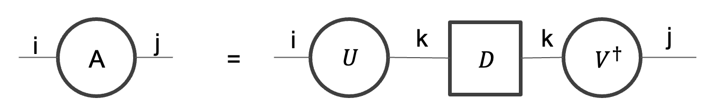
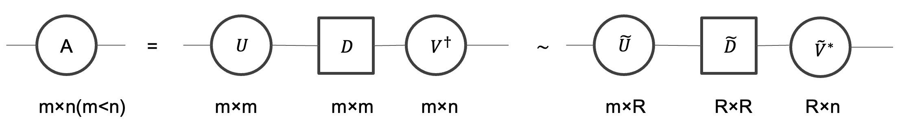
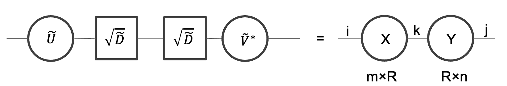
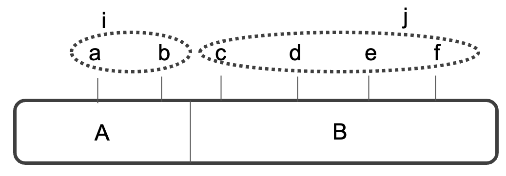

テンソルネットワークで必要となる数学として特異値分解、行列の低ランク近似、シュミット分解、エンタングルメントエントロピーについてまとめました。
目次
特異値分解とは
特異値分解は任意のn×m行列Aを以下のような行列の積に分解することである。固有値分解(行列の対角化)を正方行列ではない行列にも拡張したものと考えることができる。
$$ A = UDV^{\dagger}, A_{ij}=\sum_{k=1}^sU_{ik}\lambda_{k}V^*_{jk} $$
- $A_{ij}$は行列Aのij成分
- s = min(n, m)
- Dはs×s対角行列で特異値$\lambda_k\geq0$を要素に持つ
- 非ゼロの特異値の数はAの階数に等しい
- U, Vはユニタリ行列
特異値分解するための具体的な計算方法は省略する。ここではとりあえず特異値とユニタリ行列を使って分解できることが分かれば大丈夫である。
特異値分解をテンソルネットワークのダイアグラム表記すると以下のようになる。

行列の低ランク近似
テンソルネットワークの繰り込み群、つまりテンソルネットワークを粗視化する方法を学ぶ際に、行列を今より低い階数(ランク)の行列で近似する方法が重要となるため、ここではその手法を説明する。
$A$を元の行列、$\overline{A}$を低ランク近似された行列として行列$A$の$R$ランク近似を考える。つまり
$$rank\overline{A}=R<rankA$$
このとき$\overline{A}$は以下を満たす
$$min ||A-\overline{A}||$$
最小二乗法などを用いて計算すると次のような結論が得られる。(証明は省略)
「行列$A$の最適な$R$ランク近似とは、$A$を特異値分解したときの特異値行列(特異値は大きい順に並んでいるとする)から、R番目より後ろの特異値を全て0にしたもの」
ダイアグラム表記すると$A$は以下のように変化させられることになる。

$~D$は特異値を大きい方から$R$個残し、それ以外は0にしたもの。さらに$~D$は対角行列なので全ての要素の平方根をとった行列$\sqrt{~D}$の積で表される。

よって$A$をより小さい行列の積で表現できたことが分かる。
シュミット分解
シュミット分解とは系A, Bからなる量子状態$|\psi\rangle$を非負実数$\lambda_k$、系A, Bの正規直交基底$|x_k\rangle_A, |y_k\rangle_B$を用いて以下のように分解できることである。
$$|\psi\rangle=\sum_k\lambda_k|x_k\rangle_A|y_k\rangle_B$$
ここではよりテンソルネットワーク的な文脈からシュミット分解を解説する(一般の量子情報的な議論は他の文献を参照)。
6 qubitからなる量子状態は一般に以下のように表される。ここで$a, b, c, d, e, f$は0か1である。
$$|\psi\rangle=\sum_{a, b, c, d, e, f}\psi_{abcdef}|abcdef\rangle$$
$\psi_{abcdef}$は6階テンソルの{a, b, c, d, e, f}成分であると考えることができる。このテンソルは以下のようなダイアグラム表記で表現され、系AとBに分割されるとする。

A, Bの2つの系に分かれているとき、$|\psi\rangle$はそれぞれの系の正規直交基底$|i\rangle_A, |j\rangle_B$のテンソル積を用いて以下のように表される。ここでiは脚a, bを、jは脚c, d, e, fをまとめている。脚をまとめるには(a, b)が(0, 0)のときi=0, (0, 1)のときi=1, (1, 0)のときi=2, (1, 1)のときi=3とすれば良い。jについても同様である。つまり和は、iは0〜3, jは0〜15について取っている。
$$\sum_i\sum_j\psi_{ij}|i\rangle_A|j\rangle_B$$
よって6階テンソル$\psi_{abcdef}$を2本脚にまとめられたため行列$\psi_{ij}$として表現できたことになる。つまり特異値分解が使えるので以下のように変形できる。
$$\sum_i\sum_j\sum_kU_{ik}\lambda_kV^*_{jk}|i\rangle_A|j\rangle_B$$
最後に$|x_k\rangle_A=\sum_iU_{ik}|i\rangle_A, |y_k\rangle_B=\sum_jV_{jk}^*|j\rangle_B$と変形すると$|\psi\rangle$を所望の形に分解できたことになる。
$$\sum_k\lambda_k|x_k\rangle_A|y_k\rangle_B$$
ここで$|x_k\rangle_A, |y_k\rangle_B$をシュミット基底、$\lambda_k$をシュミット係数を呼ぶ。
規格化条件より$\sum_k(\lambda_k)^2=1$を満たす。
一般にN qubitでその他の系の分割の仕方でも自然に拡張される。
エンタングルメントエントロピー
部分系A, Bからなる量子状態$|\psi\rangle$を、$|\psi\rangle=|0\rangle_A|1\rangle_B$のように直積の形でかけるとき部分系A, Bはエンタングルしていない(積状態)。$|\psi\rangle=\sum_k\lambda_k|x_k\rangle_A|y_k\rangle_B$のように直積の形で書けないとき部分系A, Bはエンタングルしているという。
また部分系A, Bからなる系の密度演算子は$|\psi\rangle\langle\psi|$と表されるので系Aの密度演算子$\rho_A$は以下のように書ける。
$$\rho_A=\mathrm{tr}B|\psi\rangle\langle\psi|$$
シュミット分解を用いると
$$\rho_A=\sum_k(\lambda_k)^2|x_k\rangle_A\langle x_k|_A$$
ここで$(\lambda_k)^2$は$|x_k\rangle_A$を見出す確率である。エンタングルメントエントロピー$S_A$は以下の式で定義される。
$$S_A=-\sum_k(\lambda_k)^2\log{(\lambda_k)^2}$$
エンタングルメントエントロピーは系A, Bのエンタングルメントの強さを表す量であり、$S_A=S_B$となる。
$\sum_k(\lambda_k)^2=1$より$(\lambda_k)^2$が1つでも1であると他の項は0となるので積状態であると言える。つまり$\lambda_k$が1に近いほどエンタングルしていないと考えることができる。これは情報理論のシャノンエントロピーが一様分布のとき最大値をとることを考えるとエンタングルメントエントロピーの定義は妥当である。
また特異値がエンタングルメントの強さに対応することも重要である。
参考文献
- Román Orús,A practical introduction to tensor networks: Matrix product states and projected entangled pair states,Annals of Physics,Volume 349,2014,Pages 117-158,ISSN 0003-4916
- Román Orús, Tensor networks for complex quantum systems, Nature Reviews Physics volume 1, pages 538–550 (2019)
- 計算物理春の学校2023, https://hohno0223.github.io/comp_phys_spring_school2023/, 参照年月日:2023/05/15
- 西野友年,テンソルネットワーク入門,講談社
- 松枝宏明,量子系のエンタングルメントと幾何学,森北出版株式会社